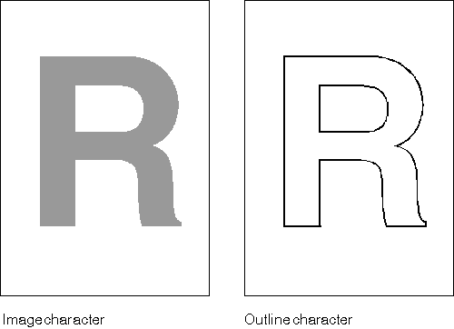

A PM application must make certain choices about fonts in preparation for text display or printing. Often these choices are driven by selections from a user. After the selections are made, as discussed in Fonts, the application can make additional decisions about the appearance of the individual characters within the font by setting attributes in the CHARBUNDLE data structure. CHARBUNDLE is the lowest of three levels of data structures that define the appearance of displayed or printed text. The other two, FONTMETRICS and FATTRS, are described in Fonts.
A font family-for instance, Helvetica** or Courier-is a collection of fonts. Fonts within the same family share certain attributes such as stroke width and serif characteristics. Stroke width refers to the width of lines used to draw characters and symbols from a font. A serif is a short crossline drawn at the ends of the main strokes that form a character or symbol.
Individual fonts within a family differ from each other in the following ways:
Height refers to the point size of a font. A common example of line weight is boldface. A common example of appearance is italic.
The most important factor that affects the CHARBUNDLE attributes is whether the current font is an image or an outline font. The following figure shows an example of the difference.
Image and Outline Fonts
Outline fonts are composed of characters drawn with straight and curved lines. Image fonts, also called bit map fonts, are composed of pels arranged in certain shapes.